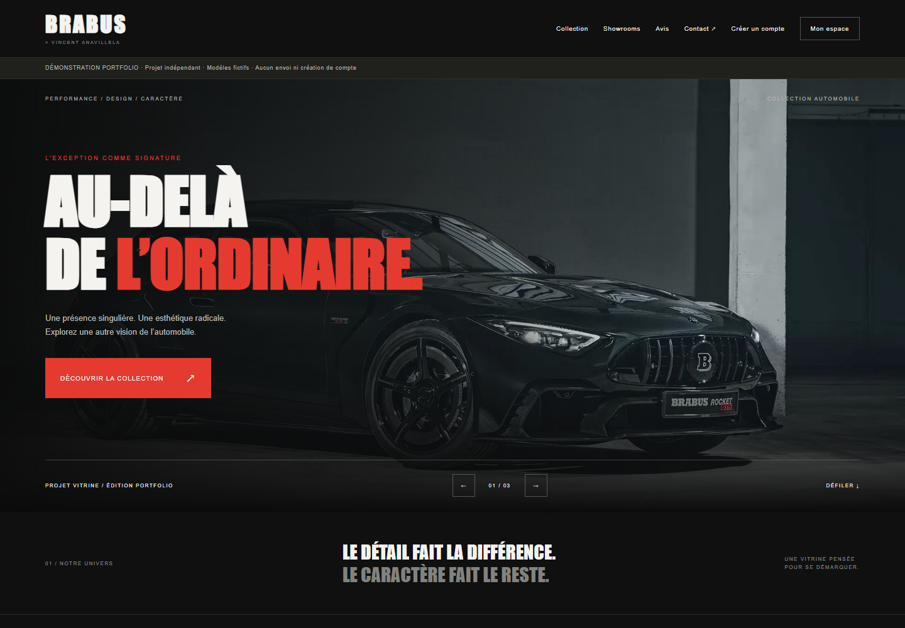

Travailler en mode projet
Analyser un besoin, définir des fonctionnalités et organiser leur réalisation : personas, user stories et priorisation MoSCoW pour BRABUS.
Voir les éléments du projet BRABUS →Je suis Vincent Anavillela.
J’apprends, j’expérimente et je développe des expériences pour le web.
Du site vitrine à l’application de gestion : une sélection de mes projets et des sujets qu’ils m’ont permis d’explorer.

Une vitrine automobile immersive : nouvelle direction graphique, catalogue filtrable et fiches techniques.
Découvrir le projet ↗Étudiant en BTS SIO, option SLAM, je me forme à la conception et au développement d’applications.
Mon objectif : poursuivre mes études en informatique, en licence professionnelle ou générale, et mettre mes compétences au service de projets concrets.
J’aime résoudre des problèmes, comprendre comment les outils fonctionnent et progresser en construisant.
Consulter mon parcours complet ↗Je recherche un stage de six semaines en développement informatique dans le cadre de mon BTS SIO, option SLAM.
Me contacter pour un stage ↗HTML · CSS · JavaScript
PHP · Python · OpenCart
MySQL · MariaDB · PostgreSQL · GitHub
Les compétences que je développe pendant ma formation, reliées à mes projets et à leurs livrables.
Analyser un besoin, définir des fonctionnalités et organiser leur réalisation : personas, user stories et priorisation MoSCoW pour BRABUS.
Voir les éléments du projet BRABUS →Concevoir une interface web, présenter un catalogue et rendre les contenus consultables sur différents écrans.
Explorer le site vitrine →Relier une interface JavaScript à une API Python, manipuler des données JSON et gérer les actions sur les tâches.
Voir l’architecture de To do list →Modéliser des entités et leurs relations, écrire des requêtes SQL et relier l’application à une base de données.
Découvrir le contexte 97CAR →Étudier les sessions, les rôles, les injections SQL et les XSS afin de mieux comprendre la protection des applications web.
Lire les points de vigilance →Construire mon portfolio, poursuivre mes certifications et structurer une veille technologique.
Voir la démarche de veille →Ces rapprochements décrivent les compétences travaillées ; ils ne constituent pas une validation de l’ensemble du référentiel. Consulter le référentiel du diplôme ↗
Des premières lignes de code aux projets sur le terrain : mon parcours se construit en avançant.
Août 2022 — juillet 2025
Baccalauréat général · NSI & SES
Lycée Jean-Claude Fruteau, Saint-Benoît.
Août 2025 — juillet 2027 prévu
BTS SIO · option SLAM
Lycée Nelson Mandela, Saint-Benoît. Conception et développement d’applications.
Mai — juin 2026
Stage en développement web · CIREST
Saint-Benoît. Développement web et utilisation d’API, de Git et de GitHub.
25 janvier — 7 mars 2027 · 6 semaines
Un stage de deuxième année en développement informatique pour continuer à apprendre sur des projets concrets.
Échangeons sur une opportunité ↗Du matériel informatique à l’intelligence artificielle : mes attestations, accessibles en un clic.
Un espace pour suivre les évolutions du développement web et relier les découvertes à mes projets SLAM.
Cette rubrique prépare la présentation de ma veille écrite. Les sujets définitifs, les synthèses datées et le lien de ma collection Pearltrees seront ajoutés après leur sélection.
Le lien de la collection sera ajouté ici.
Une sélection de points d’entrée, et non un historique d’articles déjà consultés. Faites défiler les cartes pour varier les formats.
Vérifier une API JavaScript, comprendre un mécanisme du navigateur et confronter un exemple aux explications techniques.
Consulter MDN ↗Repérer les annonces sur GitHub et les outils d’aide au code, puis distinguer les nouveautés des arguments promotionnels.
Consulter les annonces ↗Compléter la lecture par une démonstration et reproduire un exemple pour vérifier ce que j’ai compris.
Explorer les tutoriels ↗Observer les difficultés rencontrées par d’autres développeurs et vérifier les réponses avec la documentation officielle.
Parcourir les échanges ↗Cette méthode reste à personnaliser avec les outils réellement utilisés.
Un projet, une opportunité ou simplement une question ? Parlons-en.